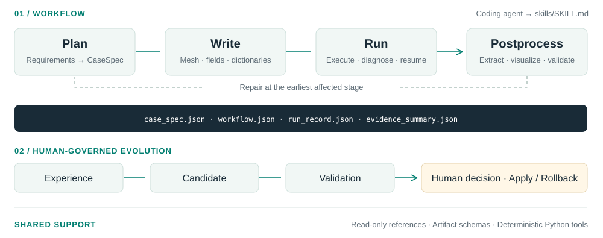

执行完成
规定的工作流是否成功完成？
Skill-Oriented OpenFOAM Agents
with Evidence-Driven Evolution
EasyFoam 将 OpenFOAM 专业知识组织为模块化 Skill、Reference、Schema 与确定性工具。具备文件和命令执行能力的编程智能体可以据此规划、构建、运行、评估和修复 CFD 工作流。
仿真成功结束，并不意味着满足数值或物理要求。配套论文研究这种“可执行性与可接受性之间的差距”，并探索如何让 CFD 知识跨智能体实现复用与改进。
规定的工作流是否成功完成？
解是否满足任务要求的数值检查？
关注量是否满足任务的验收标准？
任务通过需要三个维度同时通过。缺少证据不能判定为通过。
任务内，结构化证据指导构建与定向修复；任务间，经验可转化为可复用的 Skill 修订。

CaseSpec 明确任务要求。修复从最早受影响的阶段重新开始，并使依赖它的完成声明失效，同时保留历史运行记录。
论文研究通过配对评估选择候选更新。发布库提供人工审核、可回退的更新流程：应用、保留与回滚变更均需要明确的人工指令。
初稿中的四个系统使用相同的 DeepSeek-V4-Flash 主干与 OpenFOAM Foundation v13。表 1 对应跨任务进化前、人工编写的初始 EasyFoam Skills。任务通过率（TAR）要求三个评估维度同时通过。
| 评估集合 | 系统 | 执行完成率 | 任务通过率 |
|---|---|---|---|
| FoamBench · 126 | MetaOpenFOAM 2.0 | 28.6% | 4.8% |
| Foam-Agent | 59.5% | 4.0% | |
| ChatCFD | 34.9% | 16.7% | |
| EasyFoam | 97.6% | 41.3% | |
| ExtFoamBench · 100 | MetaOpenFOAM 2.0 | 8.0% | 0.0% |
| Foam-Agent | 27.0% | 0.0% | |
| ChatCFD | 13.0% | 0.0% | |
| EasyFoam | 72.0% | 6.0% |
来源：初稿 PDF 第 6 页，表 1。这些数据对应论文中的实验系统，并非本库的性能保证。ExtFoamBench 包含十类物理问题、五个变化轴，共 100 个任务。 论文初稿 ↗
规划、编写、运行、诊断、验证和后处理 CFD 算例。可恢复的状态与不可变运行记录保留完整证据链。
记录有依据的经验，提出冻结补丁，完成验证后请求人工决策。变更可以延期、拒绝或回滚。
只读的 OpenFOAM 与 CFD 知识、七类产物 Schema，以及用于解析、验证、执行和状态管理的确定性 Python 脚本。
需要 Python 3.11 或 3.12、OpenFOAM Foundation v13、Git，以及能够操作文件和执行命令的编程智能体。Windows 通过 WSL 执行 OpenFOAM；Linux 和 WSL 支持原生执行。
git clone https://github.com/CAS-CLab/EasyFoam.git
cd EasyFoam
python3 -m venv .venv
source .venv/bin/activate
python -m pip install -r requirements.txtgit clone https://github.com/CAS-CLab/EasyFoam.git
Set-Location EasyFoam
python -m venv .venv
.\.venv\Scripts\Activate.ps1
python -m pip install -r requirements.txtexport EASYFOAM_OPENFOAM_BASHRC=/opt/openfoam13/etc/bashrc
export EASYFOAM_EXEC_BACKEND=auto
python skills/_shared/scripts/openfoam_env.py discover$env:EASYFOAM_OPENFOAM_BASHRC = "/opt/openfoam13/etc/bashrc"
$env:EASYFOAM_EXEC_BACKEND = "auto"
python skills/_shared/scripts/openfoam_env.py discover将 bashrc 路径改为实际 OpenFOAM 安装路径。Windows 下应填写 WSL 内可见的路径。
从本仓库根目录加载 skills/SKILL.md，使用 EasyFoam Skills
完成以下 OpenFOAM v13 任务。
CFD 任务：
<你的仿真要求>
固定运行目录：
<你的运行目录>根 Skill 负责路由任务。关键输入缺失时，先澄清需求，再放行算例编写。
阅读完整安装与使用说明 →EasyFoam: Skill-Oriented OpenFOAM Agents with Evidence-Driven Evolution 介绍了本 Skill 库背后的研究框架，包括证据驱动的工作流修复与跨任务 Skill 进化。基准设计、评估协议与完整实验见论文初稿。
论文初稿 · arXiv 链接将在可用后补充